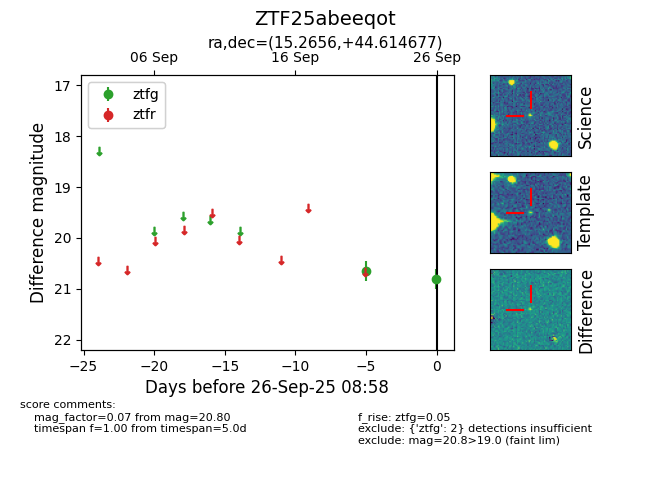

FINK: ZTF25abeeqot
Lasair: ZTF25abeeqot
ALeRCE: ZTF25abeeqot
ZTF25abeeqot (ztf,fink)
equatorial (ra, dec) = (15.2656,+44.61468)
galactic (l, b) = (124.7349,-18.22337)

last ztfg=20.80
2 ztfg detections